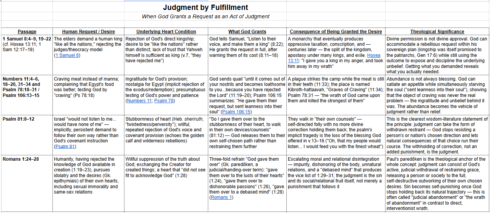

I'm sure glad Jesus gave us “another” Comforter — same kind, and if it were up to me I'd want a hundred more. Our Comforter does so much for us and gets so little credit or acknowledgment; even the Father doesn't get as much credit as Jesus does. No matter — all three persons of the Trinity seem far more concerned with exalting each other than themselves. What I particularly love about the Holy Spirit at this stage of my life, and in the condition I'm in, is that He keeps bringing to remembrance everything Jesus has said to me over the last fifty years.
A long time ago I noticed a pattern in Scripture: God's judgment, at times, is simply giving His people exactly what they asked for. That's actually what helped me follow where Josh Butler was coming from in The Skeletons in God's Closet, where he argues that hell is essentially God giving people what they've asked for instead of Him. I remembered a verse that captures this even more sharply — something like “be careful what you wish (pray) for” — and spent an evening tracking it down, with some difficulty, since the Spirit was reminding me of the KJV wording, which I don't usually read:
“And He gave them their request; but sent leanness into their soul.” — Psalm 106:15, NKJV
The Simpsons, of all things, got at this same idea years ago — see for yourself.
I followed up on it a bit more this morning, with some help from AI. Here's where it went. — Erv
Judgment by Fulfillment

A few patterns cut across all four cases: the gift itself is the rod — there's no separate punishment layered on top; the real target is always the heart, not just the behavior; and Romans 1 and Psalm 81 both frame the worst judgment as God's withdrawal of restraint rather than an added affliction. A useful cross-reference is 2 Thessalonians 2:10–12, where Paul applies the same “given over” logic to those who “refused to love the truth.”
God giving people what they wanted — as judgment
The Bible has several striking examples of this: God permitting people to pursue a rejected desire, and letting that very desire become the instrument of judgment.
When the Israelites in the wilderness craved meat and rejected God's provision, He sent quail in such abundance that people gathered mountains of it. Yet while the meat was still in their teeth, God struck the camp with a severe plague, and the place became known as “graves of gluttony” — because the very people who'd demanded meat from Egypt were buried there (Numbers 11:31–34). A psalm reflecting on the same event puts it in one line: God “gave them what they asked for, but he sent a plague along with it” (Psalm 106:13–15).
Israel's demand for a king was, at its root, a rejection of God's own kingship (1 Samuel 8:4–22). Rather than refuse outright, God told Samuel to grant the request — after warning them exactly what it would cost: a king who would conscript their sons, seize their daughters, confiscate their best land and harvest, and eventually reduce them to something close to slavery. When that day came, Samuel warned, they would cry out for relief and God would not answer. Centuries later, God summed up the whole pattern in a single line: “In my anger I gave you kings, and in my fury I took them away” (Hosea 13:9–11).
More broadly, Scripture describes a pattern of divine abandonment: God handing people over to the shameful desires of their own hearts, letting those desires produce their own degrading fruit (Romans 1:24–28). Psalm 81:11–12 says the same thing more plainly — God lets His people “follow their own stubborn desires, living according to their own ideas.” When people refuse the knowledge of God, He removes the moral restraints and lets them go their own way — itself a real expression of His wrath against those who suppress the truth.1
Put together, this is a sobering principle: God will, at times, deliberately let sinners pursue exactly what their hearts want, and face the full consequences of that desire, with none of His protective restraint left in place.2
1. Steven J. Lawson, Foundations of Grace (1400 BC–AD 100), A Long Line of Godly Men (Lake Mary, FL: Reformation Trust Publishing, 2006), 345–346.
2. Derek R. Brown and E. Tod Twist, Romans, ed. Douglas Mangum, Logos Research Commentaries (Bellingham, WA: Logos Bible Software, 2026).
Comments